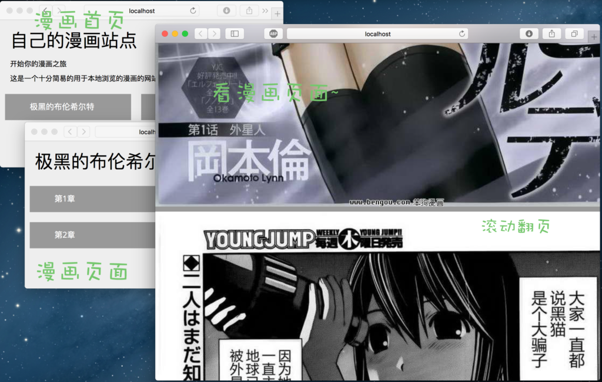

小喵的唠叨话：寒假的时候写了一个漫画爬虫，爬取了好几个漫画，不过一直没有找到合适的漫画阅读的工具。因此最近就试着自己写一个漫画的网站，放在公网上或者局域网里，这样就能随时随地用手机、Pad看漫画了。
先放上项目的地址：https://github.com/miaoerduo/cartoon-cat-server，欢迎大家随时star、fork和指教。
关于漫画爬虫的内容，请参看之前的博客。
写在前面
这里，我们先试着思考几个问题：
1、为什么要做一个漫画网站，而不是APP呢
小喵最开始其实是打算做一个QT的漫画阅读软件，这样能够在各种操作系统上用。开发了一小段时间之后，觉得用手机或者Pad看漫画的情况会更多。难道要给手机、平板甚至是PC都编写一套软件吗？这个小喵确实能力上达不到。其次是，如果是本地的APP的话，图片可能还是需要存到设备上，这样同样很麻烦。于是，漫画网站就成为最适合的选择，只要在联网的情况下（或者在同一个局域网中），只要有浏览器，就能够看漫画。这才是真正的跨平台，也是小喵要编写这个工具的原因。
2、那么，一个简单的漫画网站可以怎么去实现
讲道理的话，其实单纯的静态的网页可能就足够了，给每个漫画图片编写一个页面，包含图片、下一页、上一页等部分就可以。页面的生成可以是一个脚本程序。不过这样的话，也有点麻烦，而且最终的页面的数目可能会很多。小喵不喜欢这种方式。这里，小喵采用的方式是前、后端分离的方式。
整个网站由三个部分组成：
- 数据：也就是漫画本身。
- 后台：后台程序的功能是根据请求返回用户漫画的列表、章节和图片URL等信息。
- 前端：调用后台的程序，得到漫画的信息并友好的进行显示。
3、最后，我们使用什么技术来实现呢
前端的话，使用标准的 Html，Css 和 Js 就可以。后台是个 API Server，Python + Flask 或者 Nodejs + Express 都是不错的选择（使用起来很简单。。。），小喵这里就选用 Nodejs + Express 的方式编写后台（一直写Js就可以了 :P ）。另外，大型的漫画网站，漫画的信息应该会存到数据库中，这样会方便查找和管理。这里考虑到漫画数目比较少，就去掉了数据库这一步骤，直接通过文件操作来得到漫画信息，工作量也大大减少了。
先看一下最终的效果图（虽然界面很简单）：

现在，喵粉们是不是已经迫不及待的想要动手写代码了呢？
一、目录结构
下面是小喵的目录结构：
$ tree blog -N -L 2
blog
├── README.md
├── main.js
├── package.json
└── public
├── api.html
├── cartoon.html
├── chapter.html
├── css
├── img
├── index.html
├── js
└── storemain.js 这里就是后台API的程序。因为功能很简单，所以就放在一个文件中。package.json 是nodejs的包管理器，在这里可以定义依赖。我们这里只依赖Express。public 这个文件夹用来存放静态的资源，包括Html、Css、js、image以及漫画资源(store)。
二、后台程序
1. 依赖安装
原生的 Nodejs 就已经十分适合写API程序了，Express 只是让它更加的方便了而已（至少对于这个项目来说）。
Nodejs 的安装十分简单，在官网上 https://nodejs.org 有下载链接，服务器上使用 apt-get 等工具也很容易安装。
Express 的话，可以使用 npm install express —save 来安装。这里小喵使用的 package 的方式来安装。在项目根目录新建 package.json 文件，写入配置信息：
{
"name": "cartoon-cat-server",
"version": "0.0.1",
"dependencies": {
"express": "visionmedia/express"
}
}之后使用 npm install 命令就可以完成安装。安装完成之后会发现根目录多了一个 node_modules 文件夹，里面就是我们的依赖库了。喵粉们如果下载了我的这个项目的话，第一步也是要进入项目目录然后输入 npm install 。
2. 漫画的文件结构
我们的漫画资源都是通过 漫画喵 这个爬虫工具下载下来的，因此漫画都是每个章节都是一个文件夹，每个章节的漫画图片都放在对应的文件夹中，而且按照页码来命名。
这样通过遍历文件夹似乎就能获取漫画的信息了！
漫画列表和章节中的图片列表都可以通过上述的方式来解决，但是章节的列表却不行。因为漫画的章节有时候并没有明确的顺序（比如突然出现一个番外篇啥的），这样遍历文件夹默认的顺序（按名称）就可能是错误的。 我们有两个解决办法：
- 按照文件夹的创建时间来显示文件名。这样有点不灵活。
- 在每个漫画的根目录建一个文本文件，用来存放章节的信息。
小喵选择第二种策略，创建这个list的方法十分简单粗暴，在漫画目录下面使用:
ls -t -r > indexls 是linux上面的显示目录的工具，-t 表示按时间排序（最上面是最新的），-r 表示倒序，> 是重定向，最终输出到 index 这个文件。然后编辑这个文件，删掉 index 这一行(系统貌似是先生成 index 这个文件，然后再执行 ls，最后把结果输入到文件中，因此文件里面多了一个 index 的文件名)，再做一些必要的调整。
Windows上可以使用:
dir /OD /B > indexdir 是windows的查看目录的命令，/OD 表示按照时间排序，/B 表示只显示文件名，> 重定向到 index。windows 上的这个列表文件中也会出现 index 这个文件名(看来各种操作系统都一样)。另外需要注意的是 windows 的换行和 linux 或 mac 不一样。
这样，我们就可以通过读这个 index 文件来获取章节的信息了。
最终的漫画的结构（为了显示的方便，删除了很多图片和章节）如下：
$ tree store -N -L 3
store
├── 犬夜叉
│ ├── index
│ ├── 第1章
│ │ ├── 00001.jpg
│ │ └── 00002.jpg
│ └── 第2章
│ ├── 00001.jpg
│ └── 00002.jpg
└── 极黑的布伦希尔特
├── index
├── 第1章
│ ├── 00001.jpg
│ └── 00002.jpg
└── 第2章
├── 00001.jpg
└── 00002.jpg3. API 编写
Express 十分的容易使用。这里小喵给一个官网的Hello World的教程让大家看一下：
var express = require('express')
var app = express()
app.get('/', function (req, res) {
res.send('Hello World!')
})
app.listen(3000, function () {
console.log('Example app listening on port 3000!')
})将上述代码保存成 main.js，使用 node main.js 就可以启动这个程序，然后用浏览器访问 http://localhost:3000 ，就能看到一个显示着 hello world 的页面。
require 语句用来引入依赖，app 是express的封装的对象。
通过 app.get 方法就可以给指定的url（官方说法叫route）绑定相应的处理方法（GET方法的请求）。处理函数有2个参数 req 表示request，也就是用户的请求，通过这个对象我们可以获取用户的输入的参数，res 表示response，是一个向用户返回数据的对象。
listen 用来监听一个端口启动服务。
这里小喵先给出自己定义的一些辅助的函数，定义错误信息和参数校验，后面会使用到：
// 引入依赖
var express = require('express');
var fs = require("fs"); // 即file system，用来进行文件操作
var app = express();
/**
* 错误提示
*/
var ErrorHelper = {
'internal_error': function () {
return {
'msg': 'something wrong with server',
'code': 1
};
},
'missing_param': function (param) {
return {
'msg': 'missing param: ' + param,
'code': 2
};
},
'error_param': function (param, data) {
return {
'msg': 'the param ' + param + '(' + data + ') is illegal',
'code': 3
}
},
'not_found': function (param) {
return {
'msg': 'cannot find ' + param,
'code': 4
};
}
};
/**
* 检查参数格式，只能输入字母，数字和汉字
*/
function checkParam(param) {
return /^[\u4e00-\u9fa5_a-zA-Z0-9]+$/.test(param);
}1) get_cartoon_list
这个接口用来获取所有的漫画列表。
/**
* 获取漫画列表
*/
app.get('/get_cartoon_list', function (req, res) {
fs.readdir(__dirname + '/public/store', function (err , files) {
if (err) {
res.jsonp(ErrorHelper.internal_error());
}
res.jsonp({'cartoon': files, 'code': 0});
});
});这个函数十分的简单，通过 fs 读取store中的文件名，然后用json的格式返回回去。这里小喵用的jsonp，为了解决跨域请求的问题，不过我们的页面和服务是一台机器的，所以这部分并不需要。
2) get_chapter_list
这个接口用来获取漫画的章节的信息，所以需要输入参数，这里定为cartoon。
/**
* 获取章节信息
*/
app.get('/get_chapter_list', function (req, res) {
var cartoon = req.query.cartoon;
if (!cartoon) {
res.jsonp(ErrorHelper.missing_param('cartoon'));
return;
}
if (!checkParam(cartoon)) {
res.jsonp(ErrorHelper.error_param('cartoon', cartoon));
return;
}
var cartoon_dir = __dirname + '/public/store/' + cartoon;
fs.exists(cartoon_dir + '/index', function (exists) {
if (!exists) {
res.jsonp(ErrorHelper.not_found(cartoon));
return;
}
fs.readFile(cartoon_dir + '/index', function (err, data) {
if (err) {
res.jsonp(ErrorHelper.internal_error());
return;
}
var chapter_list = data.toString().split('\n').filter(function (d) {
return d.length > 0;
});
res.jsonp({'chapter': chapter_list, 'code': 0});
});
});
});首先判断输入的参数，之后判断对应漫画的文件夹中是否有index这个文件，如果有的话就读取然后返回给用户。
3) get_img_list
这个接口用来返回漫画的具体章节的图片的URL，用户需要输入漫画名(cartoon)和章节名(chapter)。注意要修改自己的HOST的地址。
var HOST = "localhost"; // 如果不是在本机上使用，请改成实际的ip地址
// 后面的图片的URL会使用这个变量来构造
var PORT = 3000;
app.get('/get_img_list', function (req, res) {
var cartoon = req.query.cartoon;
if (!cartoon) {
res.jsonp(ErrorHelper.missing_param('cartoon'));
return;
}
if (!checkParam(cartoon)) {
res.jsonp(ErrorHelper.error_param('cartoon', cartoon));
return;
}
var chapter = req.query.chapter;
if (!chapter) {
res.jsonp(ErrorHelper.missing_param('chapter'));
return;
}
if (!checkParam(chapter)) {
res.jsonp(ErrorHelper.error_param('chapter', chapter));
return;
}
var cartoon_dir = __dirname + '/public/store/' + cartoon;
fs.exists(cartoon_dir + '/index', function (exists) {
if (!exists) {
res.jsonp(ErrorHelper.not_found(cartoon));
return;
}
fs.readdir(cartoon_dir + '/' + chapter, function (err, images) {
if (err) {
res.jsonp(ErrorHelper.error_param('chapter', chapter));
return;
}
// 按名字排序
images.sort(function (lhs, rhs) {
return parseInt(lhs.split('.')[0]) - parseInt(rhs.split('.')[0]);
});
var urls = images.map(function (image) {
return 'http://' + HOST + ':' + PORT + '/store/' + cartoon + '/' + chapter + '/' + image;
});
res.jsonp({'img': urls, 'code': 0});
});
});
});这是目前最复杂的函数了，先检查参数，然后判断漫画是否存在，再判断章节是否存在，列出章节文件夹里面的图片名，并按数字的顺序排序。最终构造成URL，返回给用户。
4) 静态资源
public文件夹中的资源都是静态资源，用户可以通过URL访问。在这里Nodejs也是支持的：
app.use('/', express.static('public'));不过Nodejs本身并不适这种静态资源的工作，所以如果是生产环境中，建议大家还是使用Nginx等工具，让Nodejs安心的处理业务逻辑吧。
5) 启动服务
var server = app.listen(PORT, function () {
console.log("应用实例，访问地址为 http://%s:%s", HOST, PORT);
});三、前端
1. Ajax
前端使用Ajax就可以很容易完成，相信即使是前端小白也能实现，而且还比小喵做的好看（无奈脸）。小喵使用了JQuery 来处理Ajax的内容，界面库使用了 Metro，然而即使这样也没有提高网站的颜值。
源码可以从github上下载到，所以小喵就不重点介绍前端了。
2. 懒加载
有一点需要注意，在漫画图片的页面中，通常会出现大量的图片，如果只是简单的使用 img 标签的话，可能会导致浏览器同时加载所有的图片，如果网速不好的话，我们的体验也会相当的差（局域网请无视）。所以我们使用一种 懒加载 的策略，只有可见的图片才会加载。然后小喵就从github上找相关的插件，然后发现了一个使用比较方便的代码，还有详细的原理介绍，感兴趣的话大家可以看一下。
图片懒加载插件实战：http://www.cnblogs.com/beidan/p/5648240.html
插件的github：https://github.com/beidan/lazeLoadImg
四、写在后面
至此，我们就搭建好了一个可以随时玩耍的个人漫画网站了。喵粉们感兴趣可以star、fork这个项目，如果喜欢开发的话，能帮忙一起提高网站的颜值就更好了 O(∩_∩)O哈！
项目地址：https://github.com/miaoerduo/cartoon-cat-server ，欢迎大家随时star、fork和指教。
PS. 请搭配漫画喵爬虫版一起食用：https://github.com/miaoerduo/cartoon-cat
使用的话，按如下的流程：
git clone git@github.com:miaoerduo/cartoon-cat-server.git
cd cartoon-cat-server
npm install
node main.js另外，为了避免程序突然崩掉，建议大家使用 forever 这个工具。上面的流程的最后一句 node main.js 就可以改成下面的。
npm install forever -g
forever start main.js这样，我们的程序就更健壮了。 最后，小喵再说一句，这个项目有很多的缺陷，比如直接访问文件，Nodejs直接管理静态文件，需要提供奇怪的参数，没有验证用户等等。因此不适合真的生成中的使用。不过，自娱自乐应该是足够了。小喵自己是放在宿舍的树莓派里，睡前躺床上看会儿漫画。
希望小喵能和大家一起学习和进步~~
转载请注明出处~